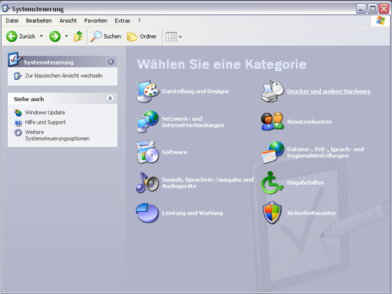
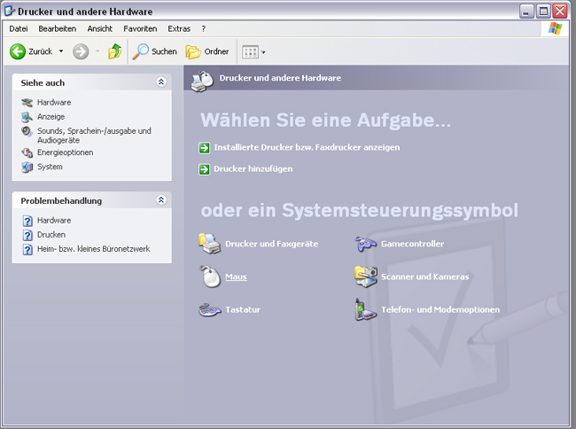
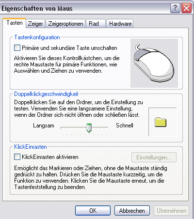
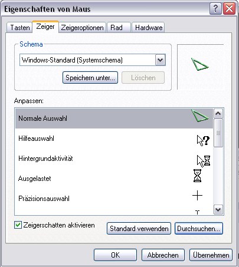

Earth 2150 Windows Cursors Installation
( sample with Windows XP )
Schritt 1 :

Begebe dich zur Systemsteuerung und drücke auf Drucker und andere Hardware .
Schritt 2 :

Nun Drückst du bei Systemsterungssymbol auf Maus.
Schritt 3 :

Jetzt erscheint die Eigenschaften von der Maus, hier drückst du nun auf Zeiger .
Schritt 4 :

Nun kannst du die einzelnen Cursor bestimmen, hierzu wählst du
zunächst einen Cursor aus wie z.b. Normale Auswahl,
dann
klickst du auf Durchsuchen und suchst dir einen von den Earth 2150
Cursorn aus und klicks anschließend noch auf Übernehmen.
Step 1 :
Go to the Systemcontrol and Click on Printer and other Hardware.
Step 2 :
Now click at Systemcontrolsymbol on Mouse.
Step 3 :
Now come the Properties from the Mouse, click here on Mousepointer / pointer
Step 4 :
Here can you chose your Cursors, select one of the standart cursors and
click on browse , now select 1 of the Earth 2150 Cursors,
and
save this settings.
written on Nov, the 27th 2005 by Benni
© 2005 by Inside
Earth Operations ( IEO )